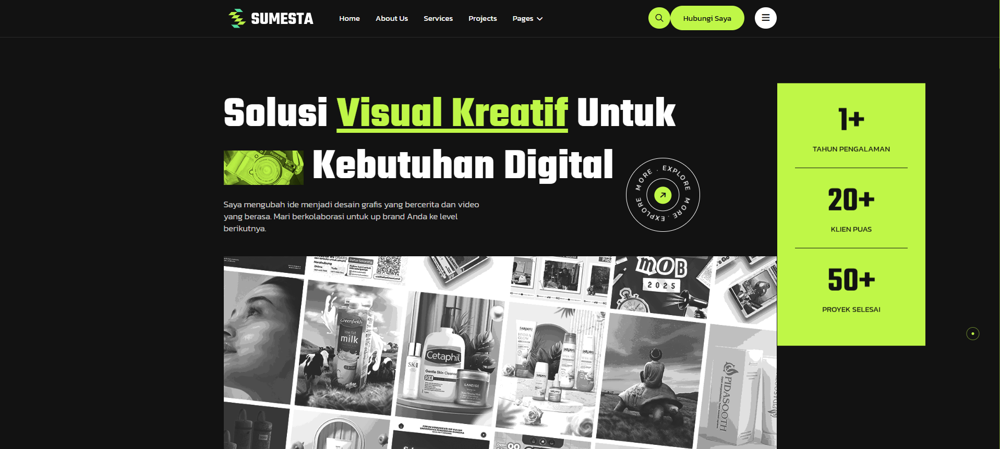

HTML
CSS
JavaScript
Website Portofolio
Website portofolio pribadi responsif yang dibuat menggunakan template HTML dan CSS murni tanpa framework, yang saya download dari Envato, lalu kembangkan sesuai kebutuhan saya.
Buka Demo →